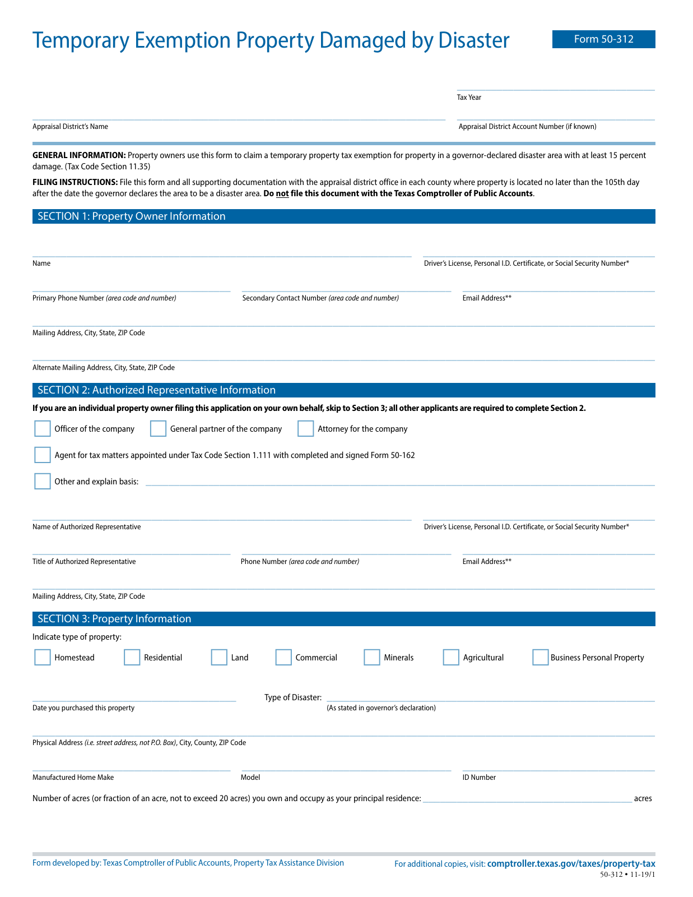
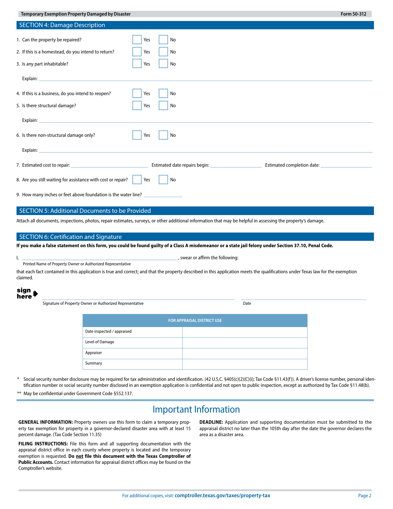

Formulario 50-312: ver o descargar
Exención temporal para propiedades dañadas por un desastre. Este es el formulario original de dos páginas del Contralor de Texas en inglés, sin cambios.
Complete y firme el formulario, incluya fotos y documentación de respaldo y preséntelo al Distrito Central de Tasación de Kerr a más tardar el 30 de octubre de 2026. Kerr CAD determina la elegibilidad.
Si el PDF no se abre, lea las dos páginas abajo. En Chrome para iPhone, pruebe Compartir → Guardar en Archivos y luego abra el archivo guardado desde Archivos. Si está viendo esta página dentro de otra aplicación, ábrala en Safari o Chrome e inténtelo de nuevo.
Descargar el original del Contralor de Texas · Detalles de presentación de Kerr CAD · Ayuda: (830) 895-5223
¿Necesita una copia en papel? Llame a Kerr CAD al número de arriba. Use el PDF para completar y firmar la solicitud. Esta página no recopila ni envía su información.
Vista previa del formulario, solo para lectura
Estas imágenes muestran las dos páginas en blanco. Abra una página en tamaño completo para ampliarla. El PDF original de arriba conserva sus campos rellenables.


Leer el texto del formulario (inglés)
Texto extraído del original para lectura. Use el PDF original para completar el formulario.
Temporary Exemption Property Damaged by Disaster Form 50-312
___________________________________
Tax Year
_________________________________________________________________________ ___________________________________
Appraisal District’s Name Appraisal District Account Number (if known)
GENERAL INFORMATION: Property owners use this form to claim a temporary property tax exemption for property in a governor-declared disaster area with at least 15 percent
damage. (Tax Code Section 11.35)
FILING INSTRUCTIONS: File this form and all supporting documentation with the appraisal district office in each county where property is located no later than the 105th day
after the date the governor declares the area to be a disaster area. Do not file this document with the Texas Comptroller of Public Accounts.
SECTION 1: Property Owner Information
___________________________________________________________________ _________________________________________
Name Driver’s License, Personal I.D. Certificate, or Social Security Number*
___________________________________ ______________________________________ __________________________________
Primary Phone Number (area code and number) Secondary Contact Number (area code and number) Email Address**
______________________________________________________________________________________________________________
Mailing Address, City, State, ZIP Code
______________________________________________________________________________________________________________
Alternate Mailing Address, City, State, ZIP Code
SECTION 2: Authorized Representative Information
If you are an individual property owner filing this application on your own behalf, skip to Section 3; all other applicants are required to complete Section 2.
Officer of the company
General partner of the company
Attorney for the company
Agent for tax matters appointed under Tax Code Section 1.111 with completed and signed Form 50-162
Other and explain basis: ___________________________________________________________________________________________
___________________________________________________________________ _________________________________________
Name of Authorized Representative Driver’s License, Personal I.D. Certificate, or Social Security Number*
___________________________________ ______________________________________ __________________________________
Title of Authorized Representative Phone Number (area code and number) Email Address**
______________________________________________________________________________________________________________
Mailing Address, City, State, ZIP Code
SECTION 3: Property Information
Indicate type of property:
Homestead
Residential
Land
Commercial
Minerals
Agricultural
Business Personal Property
____________________________________ Type of Disaster: ___________________________________________________________
Date you purchased this property (As stated in governor’s declaration)
______________________________________________________________________________________________________________
Physical Address (i.e. street address, not P.O. Box), City, County, ZIP Code
___________________________________ ______________________________________ __________________________________
Manufactured Home Make Model ID Number
Number of acres (or fraction of an acre, not to exceed 20 acres) you own and occupy as your principal residence: _____________________________________ acres
Form developed by: Texas Comptroller of Public Accounts, Property Tax Assistance Division For additional copies, visit: comptroller.texas.gov/taxes/property-tax
50-312 • 11-19/1
Temporary Exemption Property Damaged by Disaster Form 50-312
SECTION 4: Damage Description
1. Can the property be repaired?
Yes
No
2. If this is a homestead, do you intend to return?
Yes
No
3. Is any part inhabitable?
Yes
No
Explain: ________________________________________________________________________________________________________
4. If this is a business, do you intend to reopen?
Yes
No
5. Is there structural damage?
Yes
No
Explain: ________________________________________________________________________________________________________
6. Is there non-structural damage only?
Yes
No
Explain: ________________________________________________________________________________________________________
7. Estimated cost to repair: ________________________ Estimated date repairs begin: ________________ Estimated completion date: ________________
8. Are you still waiting for assistance with cost or repair?
Yes
No
9. How many inches or feet above foundation is the water line? ____________
SECTION 5: Additional Documents to be Provided
Attach all documents, inspections, photos, repair estimates, surveys, or other additional information that may be helpful in assessing the property’s damage.
SECTION 6: Certification and Signature
If you make a false statement on this form, you could be found guilty of a Class A misdemeanor or a state jail felony under Section 37.10, Penal Code.
I, ____________________________________________________________ , swear or affirm the following:
Printed Name of Property Owner or Authorized Representative
that each fact contained in this application is true and correct; and that the property described in this application meets the qualifications under Texas law for the exemption
claimed.
____________________________________________________________ ________________________________________
Signature of Property Owner or Authorized Representative Date
FOR APPRAISAL DISTRICT USE
Date inspected / appraised
Level of Damage
Appraiser
Summary
* Social security number disclosure may be required for tax administration and identification. (42 U.S.C. §405(c)(2)(C)(i); Tax Code §11.43(f)). A driver’s license number, personal iden-
tification number or social security number disclosed in an exemption application is confidential and not open to public inspection, except as authorized by Tax Code §11.48(b).
** May be confidential under Government Code §552.137.
Important Information
GENERAL INFORMATION: Property owners use this form to claim a temporary prop- DEADLINE: Application and supporting documentation must be submitted to the
erty tax exemption for property in a governor-declared disaster area with at least 15 appraisal district no later than the 105th day after the date the governor declares the
percent damage. (Tax Code Section 11.35) area as a disaster area.
FILING INSTRUCTIONS: File this form and all supporting documentation with the
appraisal district office in each county where property is located and the temporary
exemption is requested. Do not file this document with the Texas Comptroller of
Public Accounts. Contact information for appraisal district offices may be found on the
Comptroller’s website.
For additional copies, visit: comptroller.texas.gov/taxes/property-tax Page 2